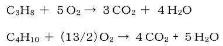

平成26年度 問29 有機化学及び燃料
プロパン30.0 vol%、ブタン70.0 vol%の混合ガス1 m3を理論空気量の1.15倍の空気を供給し完全燃焼させたとき、水蒸気を除く燃焼ガス量に最も近い値はどれか。混合ガス、燃焼ガスはともに25℃、100 kPaの条件下にあり、反応は次式による。

なお、空気中の酸素濃度、窒素濃度はそれぞれ21.0 vol%、79.0 vol%とし、各元素の原子量は、H=1、C=12、O=16とする。
今回、温度と圧力が一定であることから、理想気体の状態方程式(PV=nRT)より体積Vと物質量nは比例関係にあります。
プロパン30.0 vol%、プタン70.0 vol%であることから、混合ガス1 m3に対してプロパン0.3 m3、ブタン0.7 m3が含まれています。体積Vと物質量nは比例関係にあるとして、プロパンの燃焼に必要な酸素は0.3 × 5 ＝1.5 m3、ブタンは0.7 × 13/2 ＝4.55 m3です。
合計して1.5＋4.55＝6.05 m3の酸素が必要です。空気中の酸素濃度、窒素濃度はそれぞれ21.0 vol%、79.0 vol%ですので、理論空気量は6.05 × 100/21＝28.8 m3です。今回、理論空気量の1.15倍の空気を供給しているため、28.8 × 1.15＝33.1 m3の空気を供給しています。
供給空気量を基に窒素、二酸化炭素、そして過剰に供給された酸素の量を計算します。
窒素：33.1 × 0.79＝26.1 m3
二酸化炭素：0.3 × 3＋0.7 × 4＝3.7 m3
過剰に供給された酸素：(33.1 – 28.8) × 0.21＝0.9 m3
よって、、、燃焼ガス量は26.1＋3.7＋0.9＝30.7 m3となり、最も近い値は31 m3です。